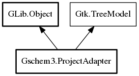

ProjectAdapter
Object Hierarchy:

Description:
public class ProjectAdapter : Object, TreeModel
Adapts a project to a tree model
Content:
Enums:
- Column - An enumeration of the columns in
the tree model
Properties:
Creation methods:
Methods:
- public Type get_column_type (int column)
Returns the GLib.Type used in a column
- public TreeModelFlags get_flags ()
Returns the TreeModelFlags for this tree model
- public bool get_iter (out TreeIter iter, TreePath path)
Convert a tree path to an iterator
- public int get_n_columns ()
Returns the number of columns in the tree
- public TreePath? get_path (TreeIter iter)
Converts a tree iterator into a tree path
- public void get_value (TreeIter iter, int column, out Value contents)
Gets the value in a column
- public bool iter_children (out TreeIter first, TreeIter? parent)
Get an iterator to the first child of a parent
- public bool iter_has_child (TreeIter parent)
Determines if the tree node has child nodes
- public int iter_n_children (TreeIter? parent)
Get the number of child nodes
- public bool iter_next (ref TreeIter iter)
Get the next iterator at the same level
- public bool iter_nth_child (out TreeIter child, TreeIter? parent, int index)
Get an iterator to the indexed child of a parent
- public bool iter_parent (out TreeIter parent, TreeIter child)
Get the parent node of a child
Signals:
Inherited Members:
All known members inherited from class GLib.Object
- interface_find_property
- interface_install_property
- interface_list_properties
- @new
- new_valist
- newv
- new_with_properties
- add_toggle_ref
- add_weak_pointer
- bind_property
- connect
- constructed
- disconnect
- dispose
- dup_data
- dup_qdata
- force_floating
- freeze_notify
- @get
- get_class
- get_data
- get_property
- get_qdata
- get_type
- getv
- is_floating
- notify_property
- @ref
- ref_sink
- replace_data
- replace_qdata
- remove_toggle_ref
- remove_weak_pointer
- @set
- set_data
- set_data_full
- set_property
- set_qdata
- set_qdata_full
- set_valist
- setv
- steal_data
- steal_qdata
- thaw_notify
- unref
- watch_closure
- weak_ref
- weak_unref
- notify
- ref_count
All known members inherited from interface Gtk.TreeModel
- @foreach
- @get
- get_column_type
- get_flags
- get_iter
- get_iter_first
- get_iter_from_string
- get_n_columns
- get_path
- get_string_from_iter
- get_valist
- get_value
- iter_children
- iter_has_child
- iter_n_children
- iter_next
- iter_nth_child
- iter_parent
- iter_previous
- ref_node
- rows_reordered_with_length
- unref_node
- row_changed
- row_deleted
- row_has_child_toggled
- row_inserted
- rows_reordered